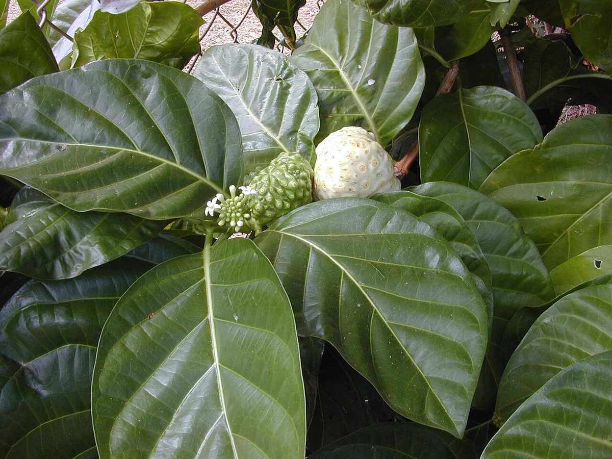
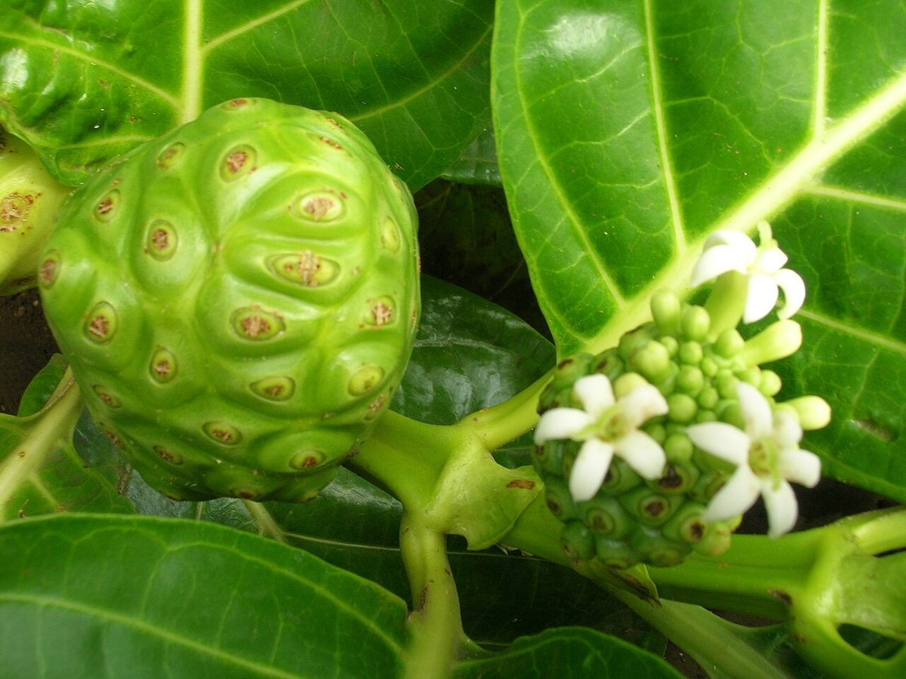
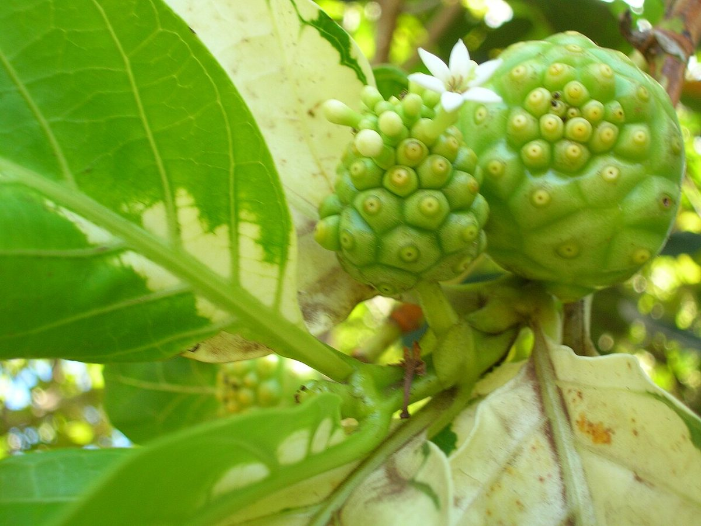

Morinda citrifolia
noni · Indian mulberry, cheese fruit, noni



Quick facts
| Family | Rubiaceae |
|---|---|
| Scientific name | Morinda citrifolia |
| Hawaiian name(s) | noni |
| English name(s) | Indian mulberry, cheese fruit, noni |
| Status | Polynesian introduction (canoe plant) |
| Conservation | — |
| Coastal zones | Valley mouth Beach strand |
| Occurrence | Persistent and naturalizing on lowland disturbed sites throughout the unpopulated Kauaʻi coast: valley mouths at Kalalau and Miloliʻi, back- beach strand, and along the drier margins of stream valleys. Once planted as a canoe plant, now self-perpetuating in the coastal lowland. |
How to identify
- Growth form
- Small tree or large shrub 2–8 m tall, often multi-stemmed from the base; typically upright with a rounded crown.
- Size
- 2–8 m tall.
- Leaves
- Opposite (in decussate pairs), large, glossy dark green, ovate to elliptic, 20–45 cm long, with a smooth entire margin. Venation is strong: a prominent midrib and 6–10 pairs of arcuate secondary veins that curve toward the leaf tip. Leaves feel firm and glossy.
- Flowers
- Small tubular white flowers with 5 lobes, each 1–1.5 cm long, projecting from the developing compound fruit-head.
- Fruit / seed
- **The most distinctive feature.** A fleshy compound fruit 5–10 cm long, ovoid, formed from fused ovaries of the head-like inflorescence. Surface is knobby-warty, marked by the outlines of the individual fused fruits. Green to yellow-white when ripening, translucent when fully ripe, and giving off a strong "aged-cheese" smell — one of the plant's common names is "cheese fruit". No native Hawaiian coastal plant has this fruit.
- Bark / stem
- Pale grey, smooth on younger stems, becoming shallowly fissured with age.
- Where it sits on the coast
- Disturbed valley mouths, back-beach strand, roadside margins where they exist — always at low elevation.
Clinchers (features that lock the ID)
- Knobby-warty compound fruit — unmistakable in Hawaiian coastal flora.
- Large opposite glossy leaves with strongly arcuate parallel-looking veins.
- Tubular white flowers projecting from the fruit-head itself, not on separate stalks.
- Strong "aged-cheese" smell from ripe fruits.
Look-alikes
- Other Rubiaceae with opposite leaves and clustered fruits — No Rubiaceae species on the Kauaʻi unpopulated coast produces a knobby compound fruit like noni's. If the fruit-head is present, identification is not in doubt. If only vegetative, the combination of large opposite leaves with strong arcuate venation on a small lowland-disturbed-site tree is diagnostic.
Ecology
Widely naturalized across the tropics from Indo-Pacific origin; established as a Polynesian introduction to Hawaiʻi and now spreading as a lowland disturbed-site tree. Fruits are consumed by rats and some birds; seeds pass through the gut and germinate in disturbed soil, which accounts for its spread from planting sites into surrounding areas. [1], [2], [39], [40], [43]
Cultural significance
Noni is a canoe plant with a broad traditional use profile: dye for kapa cloth (red pigment from the bark, yellow pigment from the root), medicine from the fruit and leaves for many ailments, and food from the fruit and (in some contexts) the young leaves. Handy & Handy 1972 records noni as a well-established Hawaiian ethnobotanical plant. Contemporary interest in noni juice has produced a commercial industry alongside ongoing traditional-medicine practice. This guide names the traditional and contemporary uses; the transmission of preparation and medicinal knowledge belongs to Hawaiian practitioners and contemporary noni growers.